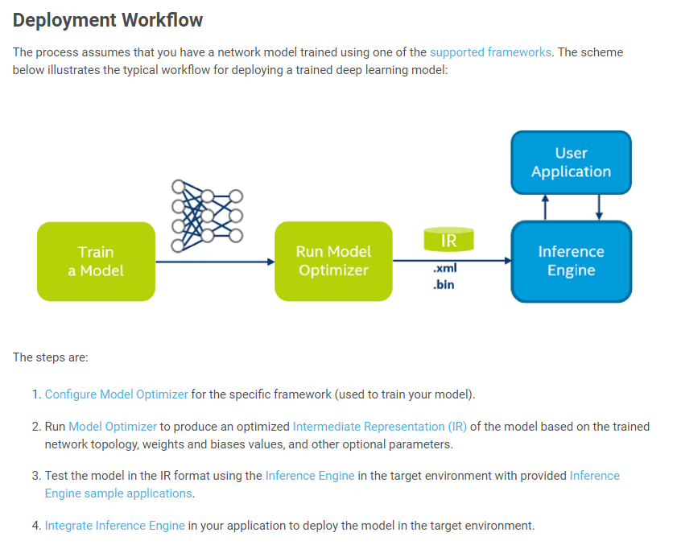
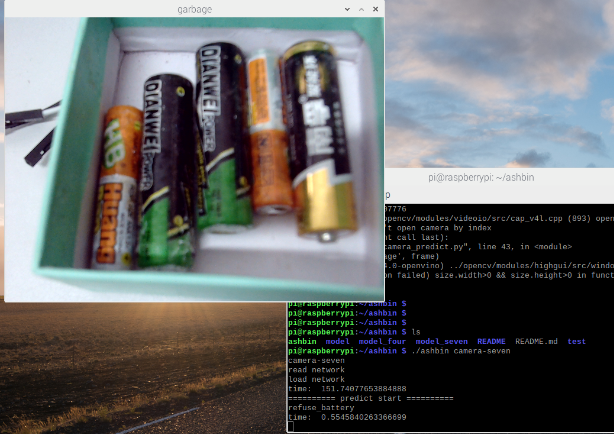

Windows 10 使用 OpenVINO
- categories
- >
- NeuralNetwork
- >
- OpenVINO
参考
- Release Notes for Intel® Distribution of OpenVINO™ Toolkit 2020.3 LTS
- Introduction to Intel® Deep Learning Deployment Toolkit
- Data Structures
- (OPTIONAL) EXPORTING A MODEL FROM PYTORCH TO ONNX AND RUNNING IT USING ONNX RUNTIME
- Use the Model Downloader and Model Optimizer for the Intel® Distribution of OpenVINO™ Toolkit on Raspberry Pi*
- Install OpenVINO™ toolkit for Raspbian* OS
环境
- 转换平台: Windows 10
- Python版本: Python 3.7.
- 部署平台: Raspberry Pi 3B+
- 已有模型: pytorch
- 目标模型: onnx

安装OpenVINO toolkit至默认位置。我的默认位置: Introduction to Intel® Deep Learning Deployment Toolkit。
模型转换
pytorch -> onnx
用于单张图片判断代码和模型转换代码。
import torch
from torchvision import models
import torch.nn as nn
import os
import torchvision.transforms as transforms
import time
import sys
from PIL import Image
import torch.utils.model_zoo as model_zoo
model_name = 'C:\\Users\\milk\\Desktop\\model.pth'
classes = ['food', 'other', 'recycle', 'refuse']
print(classes)
model = models.densenet201(pretrained=True)
model.classifier = nn.Sequential(nn.Linear(1920, 256),
nn.ReLU(),
nn.Dropout(0.2),
nn.Linear(256, len(classes)),
nn.LogSoftmax(dim=1))
model.eval()
map_location = lambda storage, loc: storage
model.load_state_dict(torch.load(model_name, map_location=map_location))
transformations = transforms.Compose([
transforms.ToTensor(),
transforms.Normalize(
[0.485, 0.456, 0.406],
[0.229, 0.224, 0.225])
])
image = Image.open('ju.png')
image = image.convert('RGB')
image = image.resize((256, 256))
tick = time.time()
image = transformations(image)
image = torch.autograd.Variable(image[None, ...])
print("image shape: ", image.shape)
outputs = model(image)
print(time.time() - tick)
predict = outputs.max(1, keepdim=True)[1]
print("predict:\t", classes[predict])
print("time cost:\t", time.time() - tick)
torch_out = model(image)
torch.onnx.export(
model,
image,
'C:\\users\\milk\\Desktop\\deploy\\onnx_model.onnx',
export_params=True,
output_names=['ashbin'])
print("finish")模型优化
设置环境变量
环境变量文件: setvars.bat
PS C:\Program Files (x86)\IntelSWTools\openvino\bin> .\setupvars.bat
Python 3.7.9
[setupvars.bat] OpenVINO environment initialized安装依赖库
路径: c:\Program Files (x86)\IntelSWTools\openvino\deployment_tools\model_optimizer
路径下文件:
PS C:\Program Files (x86)\IntelSWTools\openvino\deployment_tools\model_optimizer> ls
目录: C:\Program Files (x86)\IntelSWTools\openvino\deployment_tools\model_optimizer
Mode LastWriteTime Length Name
---- ------------- ------ ----
d----- 2020/12/3 11:54 extensions
d----- 2020/12/3 11:29 install_prerequisites
d----- 2020/12/3 11:54 mo
-a---- 2020/7/2 17:28 999 mo.py
-a---- 2020/7/2 17:28 932 mo_caffe.py
-a---- 2020/7/2 17:28 932 mo_kaldi.py
-a---- 2020/7/2 17:28 932 mo_mxnet.py
-a---- 2020/7/2 17:28 929 mo_onnx.py
-a---- 2020/7/2 17:28 923 mo_tf.py
-a---- 2020/7/2 17:28 136 requirements.txt
-a---- 2020/7/2 17:28 85 requirements_caffe.txt
-a---- 2020/7/2 17:28 69 requirements_kaldi.txt
-a---- 2020/7/2 17:28 90 requirements_mxnet.txt
-a---- 2020/7/2 17:28 81 requirements_onnx.txt
-a---- 2020/7/2 17:28 87 requirements_tf.txt
-a---- 2020/7/2 17:28 41 version.txt安装全部依赖requirements.txt或仅安装onnx支持依赖requirements_onnx.txt
pip install -r requirements_onnx.txt转换模型
查看帮助:
python mo_onnx.py --help执行转换:
将目标目录下的onnx_model.onnx转换为.bin和.xml文件。（时间大概一分钟）
PS C:\Program Files (x86)\IntelSWTools\openvino\deployment_tools\model_optimizer> python mo_onnx.py --log_level INFO --input_model C:\Users\milk\Desktop\deploy\onnx_model.onnx --output_dir C:\Users\milk\Desktop\deploy\onnx_model成功输出结果:
[ SUCCESS ] Generated IR version 10 model.
[ SUCCESS ] XML file: C:\Users\milk\Desktop\deploy\onnx_model\onnx_model.xml
[ SUCCESS ] BIN file: C:\Users\milk\Desktop\deploy\onnx_model\onnx_model.bin
[ SUCCESS ] Total execution time: 46.46 seconds.
It's been a while, check for a new version of Intel(R) Distribution of OpenVINO(TM) toolkit here https://software.intel.com/en-us/openvino-toolkit/choose-download?cid=&source=upgrade&content=2020_3_LTS or on the GitHub*onnx_model目录文件:
onnx_mode.bin
onnx_model.mapping
onnx_model.xml文件说明:
onnx_model.bin：训练后的数据文件。包含权重和偏差二进制数据。onnx_model.mapping：映射文件。onnx_model.xml：拓扑文件。描述网络拓扑。
使用模型
在树莓派上使用。需要根据官方文档配置环境。
判断单张图片。
from openvino.inference_engine import IECore
import time
classes = ['food', 'other', 'recycle', 'refuse']
ie = IECore()
print("read network")
tick = time.time()
net = ie.read_network('onnx_model/onnx_model.xml', 'onnx_model/onnx_model.bin')
input_blob = next(iter(net.input_info))
output_blob = next(iter(net.outputs))
net.batch_size = 1
print("load network")
exec_net = ie.load_network(network=net, device_name='MYRIAD')
print("time: ", time.time() - tick)
import torchvision.transforms as transforms
transformations = transforms.Compose([
transforms.ToTensor(),
transforms.Normalize(
[0.485, 0.456, 0.406],
[0.229, 0.224, 0.225])
])
from PIL import Image
import torch
def predict(filename):
img = Image.open(filename)
img = img.resize((256, 256))
img = img.convert('RGB')
img = transformations(img)
img = torch.autograd.Variable(img[None, ...])
res = exec_net.infer(inputs={input_blob: img})
res = res[output_blob]
return classes[res.argmax()]
tick = time.time()
print(predict('test/ju.png'))
print("time: ", time.time() - tick)摄像机判断。（键盘q退出，空格键判断）
from openvino.inference_engine import IECore
import time
classes = ['food', 'other', 'recycle', 'refuse']
ie = IECore()
print("read network")
tick = time.time()
net = ie.read_network('onnx_model/onnx_model.xml', 'onnx_model/onnx_model.bin')
input_blob = next(iter(net.input_info))
output_blob = next(iter(net.outputs))
net.batch_size = 1
print("load network")
exec_net = ie.load_network(network=net, device_name='MYRIAD')
print("time: ", time.time() - tick)
import torchvision.transforms as transforms
transformations = transforms.Compose([
transforms.ToTensor(),
transforms.Normalize(
[0.485, 0.456, 0.406],
[0.229, 0.224, 0.225])
])
from PIL import Image
import torch
import cv2
def predict(frame):
img = Image.fromarray(cv2.cvtColor(frame, cv2.COLOR_BGR2RGB))
img = img.resize((256, 256))
img = img.convert('RGB')
img = transformations(img)
img = torch.autograd.Variable(img[None, ...])
res = exec_net.infer(inputs={input_blob: img})
res = res[output_blob]
return classes[res.argmax()]
capture = cv2.VideoCapture(0)
while True:
_, frame = capture.read()
cv2.imshow('garbage', frame)
if cv2.waitKey(1) & 0xFF == ord('q'):
break
elif cv2.waitKey(1) & 0xFF == ord(' '):
print("========== predict start ==========")
tick = time.time()
print(predict(frame))
print('time: ', time.time() - tick)
capture.release()
cv2.destroyAllWindows()效果

comment:
- Valine
- LiveRe
- ChangYan